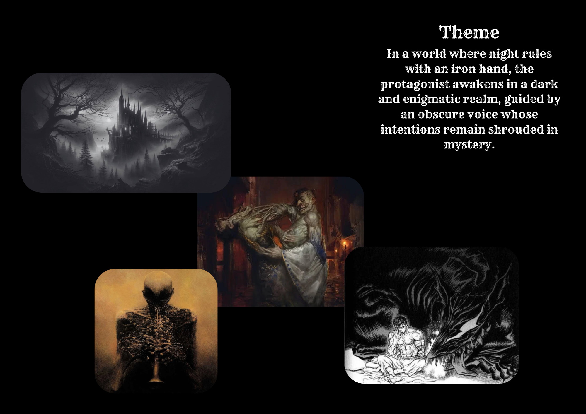
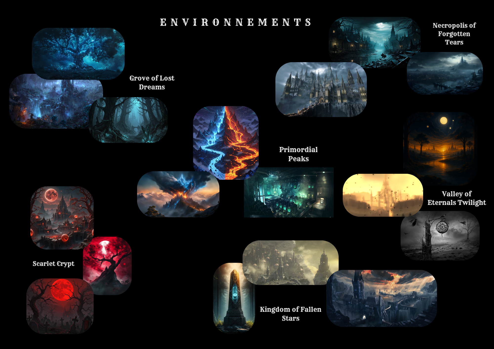
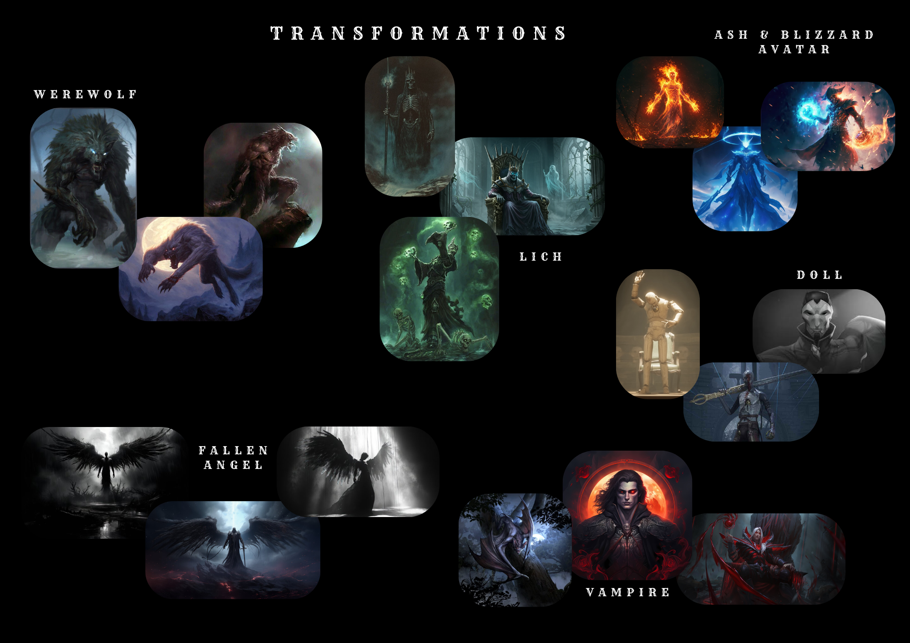

Mes Projets de Jeux Vidéo
OMG C LA FIN DU MONDE ????!!!
- Rôle : Programmeur Gameplay
- Équipe : Equipe de 6
- Durée : 3 mois
- Tâches clés : Architecture C#, Intégration Game Feel.
Mon Projet de Fin d'Études. Un Visual Novel narratif et stratégique où le joueur incarne la plus grande influenceuse du monde. Contactée par un robot venu d'un futur détruit par la 3ème Guerre mondiale, elle doit utiliser sa notoriété colossale pour déjouer l'apocalypse. Le gameplay repose sur l'effet papillon : il faut subtilement orienter le contenu de ses posts et gérer l'engagement de sa communauté pour changer le cours de l'Histoire, sachant que chaque action entraîne des conséquences inattendues.
Jouez sur Itch.ioPhantom Pulse
- Rôle : Programmeur Gameplay
- Équipe : Solo
- Durée : 1 mois
- Tâches clés : Architecture C#, IA procédurale, intégration Game Feel.
Un clignement d'œil, et vous êtes mort. Phantom Pulse est un rogue-lite shooter minimaliste qui se joue dans l'obscurité totale. Les ennemis n'apparaissent qu'une fraction de seconde avant de devenir complètement invisibles. Mémorisez leur dernière position, anticipez leurs mouvements, et fiez-vous à votre instinct pour tirer dans le vide.
The Fourth Mark
Équipe : Solo
Durée : 1 mois
Tâches clés : Level Design / Greyblocking, Intégration de Puzzle & Lore.
Conçu dans le cadre d'un projet universitaire centré sur le Level Design, The Fourth Mark place le joueur dans la peau d'un éclaireur envoyé en mission dans le village isolé d'Ironmouth. L'objectif est crucial : renouer le contact avec une base stratégique secrète, dissimulée au plus profond des égouts de la ville.
La progression propose une véritable descente vers l'inconnu, de la surface du village jusqu'aux égouts. Pour atteindre l'objectif, le joueur naviguera à travers plusieurs environnements, résoudra des énigmes et devra surmonter divers obstacles dressés sur sa route.
Wraithvale
Équipe : Solo
Durée : 3 mois
Tâches clés : Architecture Blueprints, Game & Level Design, Intégration de puzzle et de lore.
Wraithvale est une expérience horrifique courte et intense qui prend place dans un village western oublié. Dans la peau d'un mercenaire de retour d'une longue mission, vous découvrez que votre foyer a été englouti par la mort et les ténèbres. Les rues sont silencieuses, les bâtiments tombent en ruine... et vous sentez rapidement que quelque chose vous observe dans l'ombre.
Pour espérer vous échapper, vous devrez explorer cet environnement oppressant afin de dénicher huit clés dissimulées. L'histoire se dévoile à travers la collecte de notes éparpillées, permettant de reconstituer le puzzle de cette malédiction. Mais l'exploration n'est pas sans risque, car des esprits vengeurs rôdent sur ces terres. Toute la tension du jeu repose sur une mécanique de gestion de ressources : vous devez fouiller les environs pour trouver des piles et garder votre lampe torche allumée. Car si la lumière vient à s'éteindre, vous comprendrez bien vite que vous n'êtes pas seul dans l'obscurité.
Nocturne: Whisper of Shadows
Conçu comme un cauchemar éveillé, Nocturne: Whispers of Shadows est un projet d'Action-RPG narratif à la croisée entre l'exploration systémique d'un Zelda et l'atmosphère exigeante d'un Souls-like. Le joueur y incarne un ancien commandant déchu et amnésique, condamné à errer dans les ruines de l'empire qu'il a lui-même détruit. Hanté par une Ombre intérieure au discours trompeur, votre seul moteur de progression est votre propre chair.
Le cœur du jeu repose sur l'abandon de l'équipement classique au profit d'un système de métamorphoses organiques. Chaque nouveau pouvoir acquis mute physiquement le héros et redéfinit totalement son approche du monde et des combats. À travers un monde semi-ouvert sombre et interconnecté, il faudra maîtriser ces transformations pour survivre, reconstituer une mémoire fragmentée, et faire face à un univers qui réagit à votre propre culpabilité.


